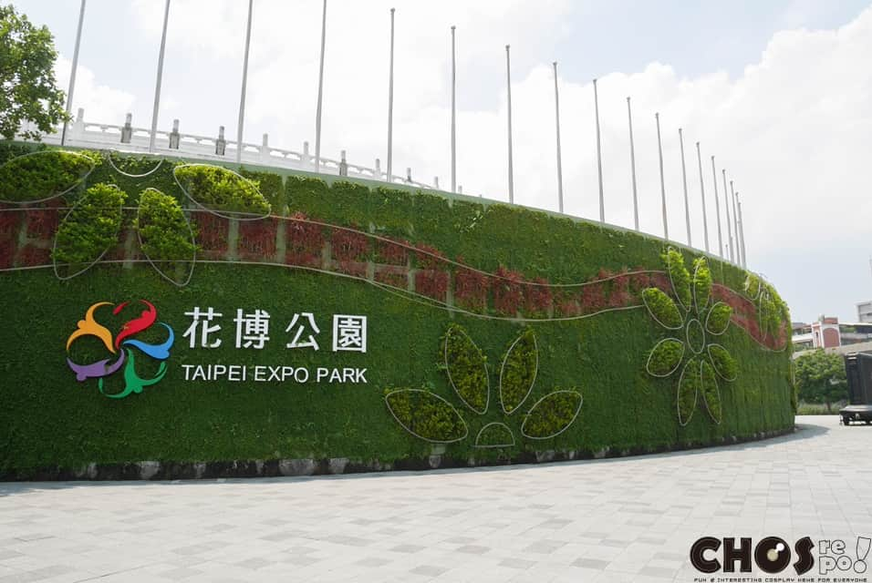

玖拾年代
圓山站-現今風貌

周圍景點-花博公園圓山園區
圓山公園位於中山北路以西、玉門街以東。廣義的圓山公園北起基隆河，南至民族西路，包含原台北市兒童育樂中心與花博公園爭艷館與週邊，狹義的部分則僅包括育樂中心至爭豔館間的綠地部分。 園內的玉門街與酒泉街，於花博時期改為人行廣場，使得公園綠地、爭豔館與捷運圓山站間得以順利連結，但也造成居民出入時需改道民族西路。 本園西面為捷運圓山站、圓山轉運站與公車專用道，為民眾參觀花博公園與週邊活動最主要的交通設施；東面隔中山北路與花博公園─美術公園區相對，園內的迎賓大道為搭捷運的民眾前往美術公園區的主要通道。
“臺灣日治時期圓山公園前身為大日本帝國陸軍共同墓地，後經臺北縣知事橋口文藏向臺灣總督樺山資紀建議，乃改為公園。於1897年開園，是臺灣第一座公園，亦為臺北市戰前規劃的大型都會公園之一號公園。而後來臺北市於1908年新闢的公園，就與圓山公園相對而得名「新公園」，即今二二八和平紀念公園。”

小知識

昔日台鐵圓山站長宿舍
本建物為淡水線鐵道少數留存建築之一，約建於西元1900年，為昔日鐵路局圓山站長宿舍，與淡水線鐵道及圓山車站具關聯性，當時亦為城內通往圓山公園、動物園及護國禪寺之重要節點，亦為西向連通保安宮、孔廟之節點，具有重要歷史、場所意義與價值。
“結構體主要為木構造，建築高度為一層樓。外牆面構造為雨淋板及編竹夾泥牆，建物基座為紅磚砌，屋頂面材為日式黑瓦。”
小知識